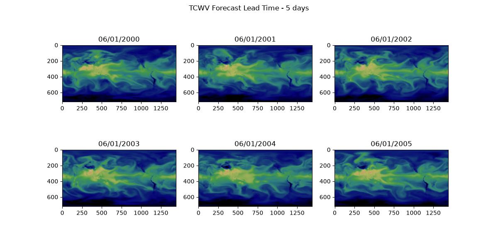

Distributed Manager Inference¶
Setting up distributed manager for parallel inference.
Many inference workflows are embarrassingly parallel and can be easily sharded across multiple devices. This example demonstrates how one can use the PhysicsNeMo distributed manager to distribute inference across mutliple GPUs. The distributed manager is a utility that provides a useful set of properties that pertain to a parallel environment.
In this example you will learn:
- How to use the distributed manager to access parallel environment properties
- Parallelize deterministic inference across multiple initial date-times
- Limitations of parallel inference in Earth2Studio
- Post-processing strategies of parallel job outputs
Set Up¶
Set up the distributed manager by initializing it. Out of the box, the distributed manager supports MPI, SLURM and PyTorch parallel environments which provide information regarding the parallel enviroment but environment variables.
For example, this script could be ran using:
# OpenMPI
mpirun -np 2 python 08_distributed_manager.py
# Torch run
torchrun --standalone --nnodes=1 --nproc-per-node=2 08_distributed_manager.py
Warning
When running in parallel, make sure the .env file in the repository examples folder is not present. The .env file is intended for the documentation build only.
import os
os.makedirs("outputs", exist_ok=True)
from dotenv import load_dotenv
load_dotenv() # TODO: make common example prep function
import numpy as np
import torch
from loguru import logger
from physicsnemo.distributed import DistributedManager
DistributedManager.initialize() # Only call this once in the entire script!
dist = DistributedManager()
assert ( # noqa: S101
dist._distributed
), "Looks like torch distributed isn't set up. Check your env variables!"
logger.info(
f"Inference runner {dist.rank} of {dist.world_size} with device {dist.device}"
)
Console output3 lines
/__w/earth2studio/earth2studio/.venv/lib/python3.13/site-packages/torch/cuda/__init__.py:64: FutureWarning: The pynvml package is deprecated. Please install nvidia-ml-py instead. If you did not install pynvml directly, please report this to the maintainers of the package that installed pynvml for you.
import pynvml # type: ignore[import]
2026-08-19 21:37:32.914 | INFO | __main__:<module>:19 - Inference runner 0 of 1 with device cuda:0Next the needed components get initialized. Rigorous parallel support is not part of Earth2Studio's design goals, there are some spots where potential race conditions can occur. Thus some additional care should be taken to ensure safe parallel inference.
from earth2studio.data import WB2ERA5
from earth2studio.io import ZarrBackend
from earth2studio.models.px import DLWP
# Load model
package = DLWP.load_default_package()
if dist.rank == 0:
model = DLWP.load_model(package)
torch.distributed.barrier()
if dist.rank != 0:
model = DLWP.load_model(package)
Console output7 lines
WARNING[XFORMERS]: xFormers can't load C++/CUDA extensions. xFormers was built for:
PyTorch 2.10.0+cu128 with CUDA 1208 (you have 2.13.0+cu130)
Python 3.10.19 (you have 3.13.13)
Please reinstall xformers (see https://github.com/facebookresearch/xformers#installing-xformers)
Memory-efficient attention, SwiGLU, sparse and more won't be available.
Set XFORMERS_MORE_DETAILS=1 for more details
CuPy distance computation test failed with error: cuVS >= 24.12 or pylibraft < 24.12 should be installed to use this featureWhen loading models that are built into Earth2Studio, the model's checkpoint files
will be downloaded into the machines cache. If each inference process has access to
the same cache location, then only one should download the checkpoint triggered by
load_model.
Here earth2studio.models.px.DLWP checkpoint files are first downloaded by
process 0 and then loaded by other processes.
The remote date store will place cached data into separate caches for each process. This makes the download of initial state data safe during parallel inference but also means that multiple jobs will download the same date-time if needed.
chunks = {"time": 1, "lead_time": 1}
io = ZarrBackend(
file_name=f"outputs/08_output_{dist.rank}.zarr",
chunks=chunks,
backend_kwargs={"overwrite": True},
)
Earth2Studio does not provide distributed IO support. The recommendation is to always output data for each process to a separate file, then aggregate the data during post processing.
Execute the Workflow¶
Next we can run the workflow. This example will run inference for a random date across several years and just save total column water vapor. Shard the initial date-times across the each process. The distributed manager will provide the device ID for the process.
import earth2studio.run as run
times = np.array([f"200{i:d}-06-01T00:00:00" for i in range(0, 6)])
assert ( # noqa: S101
len(times) > dist.world_size
), "Inference runs should be greater than processes"
time_shard = np.array_split(times, dist.world_size)[dist.rank]
nsteps = 20
output_coords = {"variable": np.array(["tcwv"])}
io = run.deterministic(
time_shard, nsteps, model, data, io, output_coords=output_coords, device=dist.device
)
print(io.root.tree())
torch.distributed.barrier()
Console output70 lines
2026-08-19 21:37:57.268 | INFO | earth2studio.run:deterministic:85 - Running simple workflow!
2026-08-19 21:37:57.268 | INFO | earth2studio.run:deterministic:92 - Inference device: cuda:0
Fetching WB2 data: 0%| | 0/42 [00:00<?, ?it/s]
Fetching WB2 data: 2%|▏ | 1/42 [00:00<00:10, 3.96it/s]
Fetching WB2 data: 19%|█▉ | 8/42 [00:00<00:01, 23.94it/s]
Fetching WB2 data: 45%|████▌ | 19/42 [00:00<00:00, 49.95it/s]
Fetching WB2 data: 100%|██████████| 42/42 [00:00<00:00, 74.54it/s]
Fetching WB2 data: 0%| | 0/42 [00:00<?, ?it/s]
Fetching WB2 data: 2%|▏ | 1/42 [00:00<00:07, 5.60it/s]
Fetching WB2 data: 17%|█▋ | 7/42 [00:00<00:01, 26.91it/s]
Fetching WB2 data: 57%|█████▋ | 24/42 [00:00<00:00, 65.11it/s]
Fetching WB2 data: 100%|██████████| 42/42 [00:00<00:00, 89.95it/s]
2026-08-19 21:37:59.301 | SUCCESS | earth2studio.run:deterministic:154 - Fetched data from WB2ERA5
2026-08-19 21:37:59.301 | INFO | earth2studio.run:deterministic:162 - Inference starting!
Running inference: 0%| | 0/21 [00:00<?, ?it/s]
Running inference: 5%|▍ | 1/21 [00:00<00:05, 3.54it/s]
Running inference: 10%|▉ | 2/21 [00:00<00:08, 2.11it/s]
Running inference: 14%|█▍ | 3/21 [00:01<00:06, 2.58it/s]
Running inference: 19%|█▉ | 4/21 [00:01<00:05, 2.92it/s]
Running inference: 24%|██▍ | 5/21 [00:01<00:05, 3.04it/s]
Running inference: 29%|██▊ | 6/21 [00:02<00:04, 3.16it/s]
Running inference: 33%|███▎ | 7/21 [00:02<00:04, 3.32it/s]
Running inference: 38%|███▊ | 8/21 [00:02<00:03, 3.47it/s]
Running inference: 43%|████▎ | 9/21 [00:02<00:03, 3.39it/s]
Running inference: 48%|████▊ | 10/21 [00:03<00:03, 3.33it/s]
Running inference: 52%|█████▏ | 11/21 [00:03<00:02, 3.41it/s]
Running inference: 57%|█████▋ | 12/21 [00:03<00:02, 3.32it/s]
Running inference: 62%|██████▏ | 13/21 [00:04<00:02, 3.36it/s]
Running inference: 67%|██████▋ | 14/21 [00:04<00:02, 3.37it/s]
Running inference: 71%|███████▏ | 15/21 [00:04<00:01, 3.52it/s]
Running inference: 76%|███████▌ | 16/21 [00:04<00:01, 3.49it/s]
Running inference: 81%|████████ | 17/21 [00:05<00:01, 3.53it/s]
Running inference: 86%|████████▌ | 18/21 [00:05<00:00, 3.73it/s]
Running inference: 90%|█████████ | 19/21 [00:05<00:00, 3.82it/s]
Running inference: 95%|█████████▌| 20/21 [00:06<00:00, 3.58it/s]
Running inference: 100%|██████████| 21/21 [00:06<00:00, 3.57it/s]
Running inference: 100%|██████████| 21/21 [00:06<00:00, 3.34it/s]
2026-08-19 21:38:05.584 | SUCCESS | earth2studio.run:deterministic:189 -
Inference complete
/
├── lat (721,) float64
├── lead_time (21,) timedelta64[h]
├── lon (1440,) float64
├── tcwv (6, 21, 721, 1440) float32
└── time (6,) datetime64[ns]# Post Processing
# ---------------
# Finally, we can post process the results. Xarray provides a useful function for
# opening multiple files as a single dataset, `xarray.open_mfdataset`. This
# allows outputs from all processes to get treated as a single data array.
#
# !!! warning
# In this script process 0 is used to post process so the example is in one file.
# It is best practice to perform post processing in a separate job / script entirely
# to better utilize compute resources.
if dist.rank == 0:
import matplotlib.pyplot as plt
import xarray as xr
from earth2studio.utils.time import timearray_to_datetime
paths = [f"outputs/08_output_{i}.zarr" for i in range(dist.world_size)]
ds = xr.open_mfdataset(paths, combine="nested", concat_dim="time", engine="zarr")
print(ds)
ncols = 3
fig, ax = plt.subplots(2, ncols, figsize=(12, 6))
time = timearray_to_datetime(ds.coords["time"].values.astype("datetime64[ns]"))
for i in range(6):
ax[i // ncols, i % ncols].imshow(
ds["tcwv"].isel(time=i, lead_time=-1).values,
cmap="gist_earth",
vmin=0,
vmax=100,
)
ax[i // ncols, i % ncols].set_title(time[i].strftime("%m/%d/%Y"))
plt.suptitle(
f'TCWV Forecast Lead Time - {ds.coords["lead_time"].values[-1].astype("timedelta64[ns]").astype("timedelta64[D]").astype(int)} days'
)
plt.savefig("outputs/08_tcwv_distributed_manager.jpg")
Console output9 lines
<xarray.Dataset> Size: 523MB
Dimensions: (time: 6, lead_time: 21, lat: 721, lon: 1440)
Coordinates:
* time (time) datetime64[ns] 48B 2000-06-01 2001-06-01 ... 2005-06-01
* lead_time (lead_time) timedelta64[h] 168B 0 days 00:00:00 ... 5 days 00:...
* lat (lat) float64 6kB 90.0 89.75 89.5 89.25 ... -89.5 -89.75 -90.0
* lon (lon) float64 12kB 0.0 0.25 0.5 0.75 ... 359.0 359.2 359.5 359.8
Data variables:
tcwv (time, lead_time, lat, lon) float32 523MB dask.array<chunksize=(1, 1, 721, 1440), meta=np.ndarray>